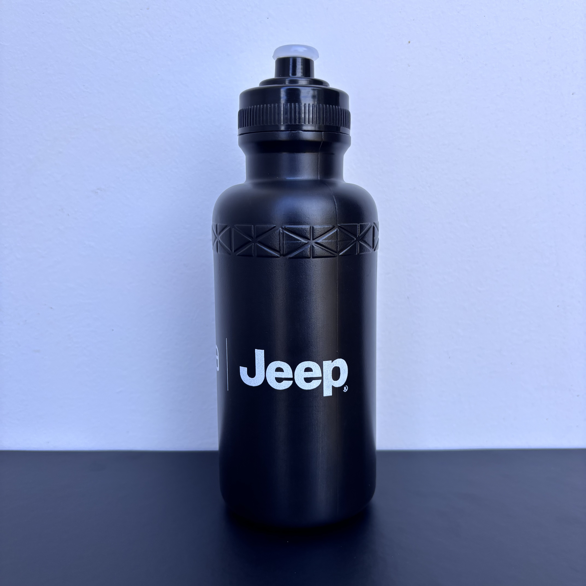
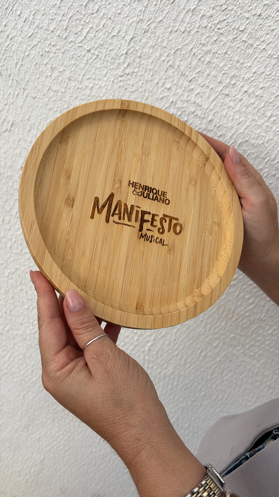
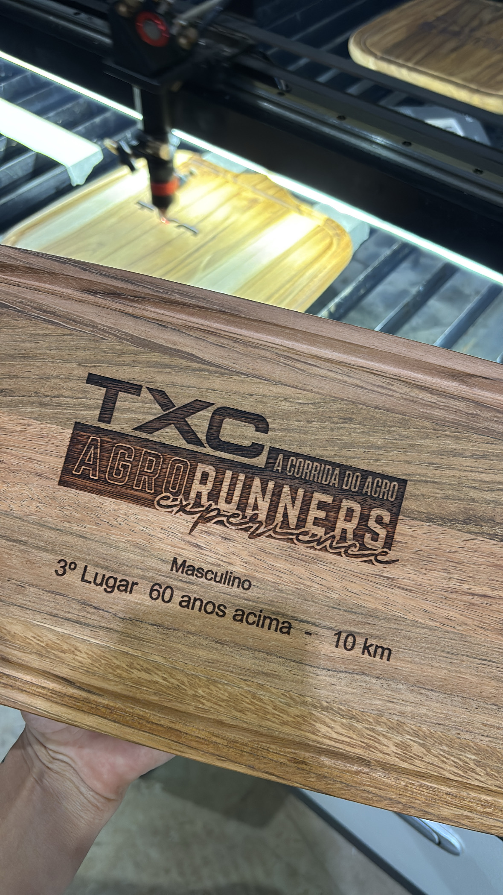
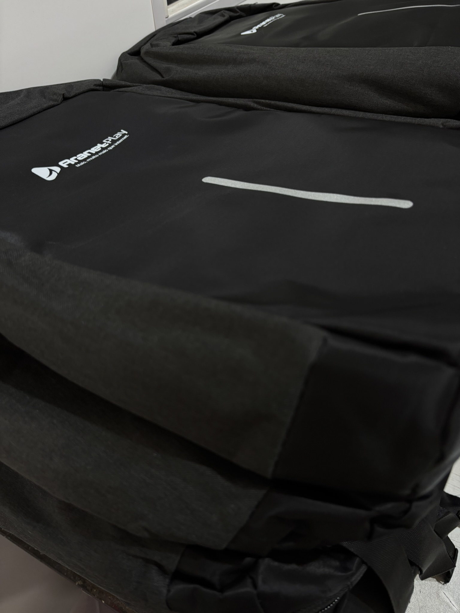
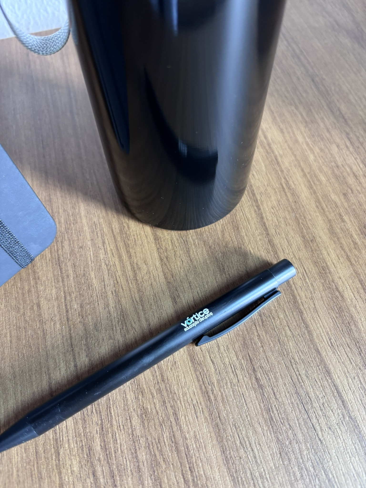
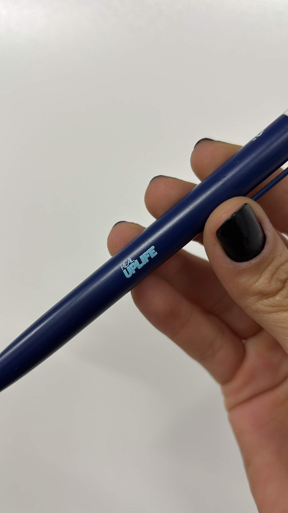

01/05
Dia dos Pais • SQZ
Presença que fica na rotina.
Produtos personalizados para reconhecer pais, equipes e parceiros com utilidade real.
Story de abertura


Produtos personalizados para reconhecer pais, equipes e parceiros com utilidade real.

Tábua, utensílios e acessórios personalizados conectam marca, família e experiência fora do escritório.
Garrafas e squeezes funcionam porque entram na rotina: mesa, carro, treino, viagem e evento.


Mochilas, ecobags, cadernos e canetas completam ações de relacionamento e endomarketing.
A SQZ monta a curadoria por objetivo, prazo, técnica e contexto de entrega.
